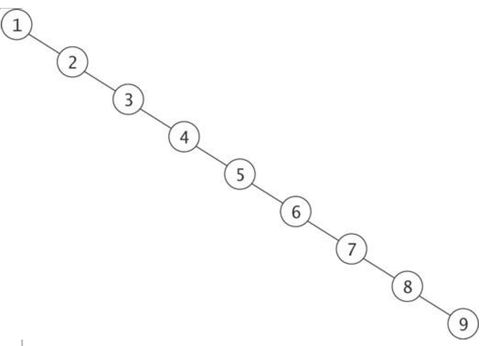

A search tree is a lot like an extension of Indexed Sequential Search except that instead of using a few nested index tables to break up a larger array, there is an index table for each pair of records.
Recall the depiction of ISAM:
Using the ISAM analog, an unbalanced tree is like using a poor choice for the index table.
A completely unbalanced tree will destroy the efficiencies of any search algorithm.

In the unbalanced tree above, the only way to traverse the tree is by accessing each node sequentially.
Searching in this manner will have the same properties as sequential search, that is (n+1)/2 comparisons and O(n) time complexity.
However, if the tree is balanced such that the height is minimized, significant gains in efficiency can be achieved. In the tree example below, it only takes 4 comparisons to return the value 54, whereas in a completely unbalanced tree (or sorted array) it would take 8 comparisons.
Searches range from O(log n) to O(n) depending on how well a tree is balanced.